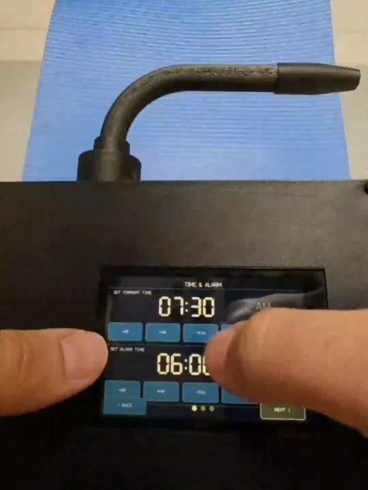
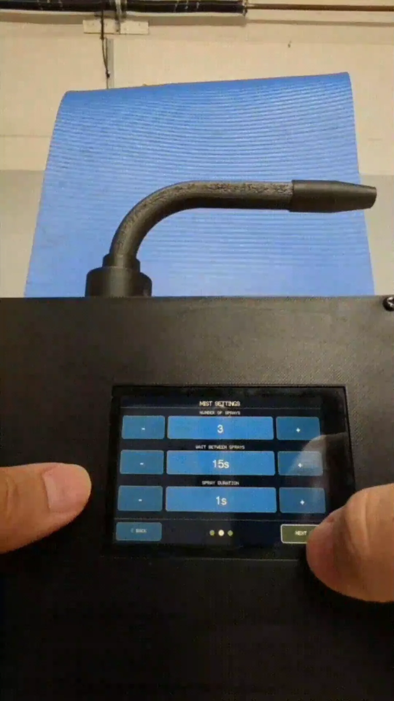
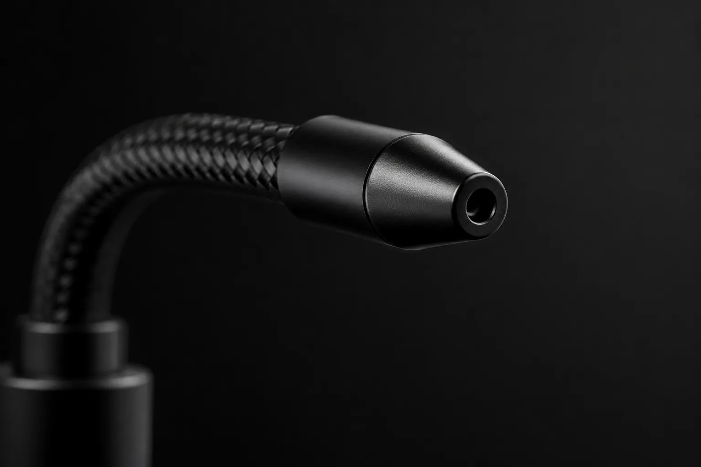
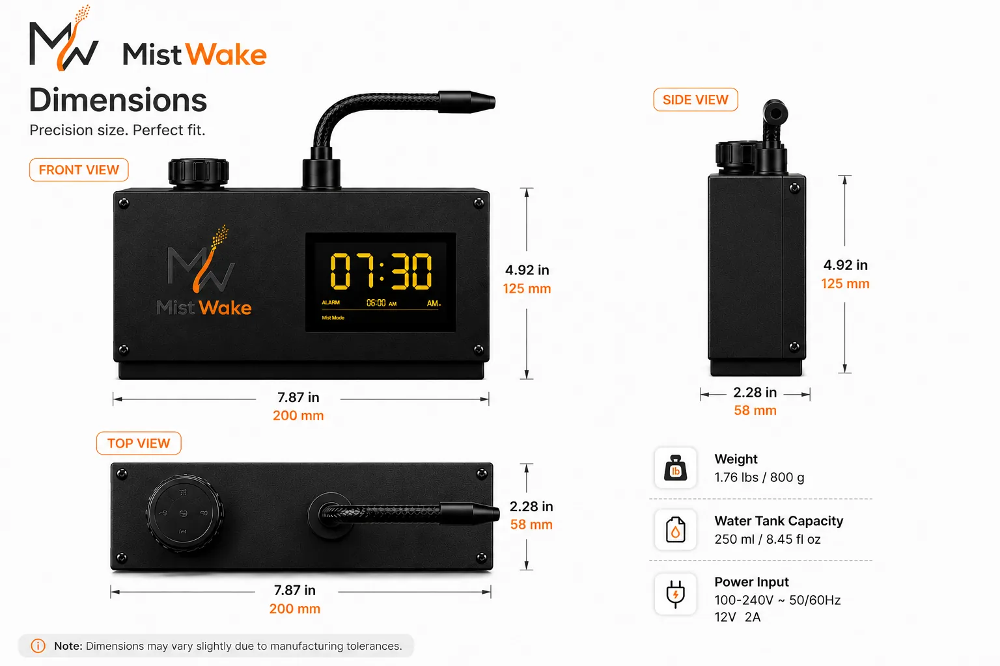

Set the alarm
Choose the wake time and whether the optional mist cue is enabled.
Launching on Kickstarter
MistWake is a bedside alarm designed for mornings when sound alone is not enough. It begins with an alarm sound and can activate a brief, aimed fine-mist cue if the alarm is not dismissed.
Pay a one-time $1 reservation fee to unlock a private Kickstarter reward with $50 off MistWake's planned retail price.
The $1 does not purchase MistWake and is not credited toward your future pledge. Shipping and applicable taxes are additional. Refundable before launch.
Watch the working prototype ↓Working prototype

Unedited demo
This video shows the physical working prototype: the touchscreen being operated, the alarm sound, and the mist cue. It is not a render and not a simulation.
Caption note: this demo currently has no burned-in captions. A captioned version will be published before paid traffic scales.
How it works
Choose the wake time and whether the optional mist cue is enabled.
MistWake starts with an audible alarm like a conventional bedside clock.
If the alarm is not dismissed, MistWake can add a brief, aimed fine-mist cue.
Mist mode can be disabled for sound-only use.
Mist, not mess
MistWake is being developed to deliver a brief, targeted fine mist rather than a stream or cup of water. The adjustable nozzle is intended to help direct the cue toward the normal sleeping position.
Final mist volume, range, coverage, and recommended bedside placement will be published after production-intent testing.
Real prototype proof


Current controls and features
Water system and electronics
Inside the housing, the water reservoir, pump, and electronics sit in separate internal compartments rather than sharing open space. The nozzle is aimed away from the housing itself, toward the bed.
Final internal layout and any additional water-protection measures will be confirmed after production-intent testing, not assumed from the current prototype alone.
Design detail


Practical specifications
Testing in progress — not yet confirmed
These will be published once they've actually been tested, not estimated in advance.
Planned package contents
MistWake alarm, power adapter, waterproof mat, and quick-start guide.

Concept illustration of planned package contents — not a photo of final retail packaging.
Why we built MistWake
MistWake began with a simple problem: conventional alarms rely almost entirely on sound. We wanted to explore whether a brief second sensory cue could create a more noticeable bedside alarm without requiring a wearable.
What's been prototyped: a working unit with a touchscreen, configurable mist settings (number of sprays, timing, duration), an adjustable nozzle, and a separated water/pump/electronics layout — shown in the video and photos above.
What's still being refined: production-intent enclosure design, final mist performance numbers, water-type and maintenance guidance, and manufacturing partners.
What Kickstarter funding will pay for: tooling, certification testing, and the first production run.
Founder name, location, and background are being added here — placeholder pending real details. We don't publish invented bios.
Pay $1 now. Unlock $50 off at launch.
Your one-time $1 reservation gives you access to a private Kickstarter VIP reward priced $50 below MistWake's planned standard retail price.
Unlocks $50 off at launch
Reserve VIP Reward AccessFAQ
The one-time $1 fee reserves access to a private Kickstarter reward with $50 off MistWake's planned retail price. It does not purchase MistWake and is not credited toward the future pledge.
Yes. The reservation fee is refundable before the Kickstarter campaign launches. Email support@mistwake.online to request a refund.
No. Shipping and applicable taxes will be calculated separately.
Yes. Mist mode is optional, and MistWake can be used in sound-only mode.
MistWake is being developed around a brief fine-mist cue rather than a heavy stream or splash. Final output and recommended placement will be published after production testing.
Approved water types and cleaning instructions are still being validated. Do not add essential oils, fragrances, medication, or other liquids.
No. MistWake is a consumer alarm clock and is not intended to diagnose, treat, cure, or prevent any medical condition.
We are completing product testing and Kickstarter preparation. Reservation holders will receive the launch date by email.
No. The $1 provides access to the private VIP reward. You must still complete a separate pledge on Kickstarter while the reward is available.
No. All current controls are on the device's own touchscreen — there is no companion app.
Pay a one-time $1 reservation fee to unlock $50 off MistWake's planned retail price at Kickstarter launch.
Unlock $50 Off for $1